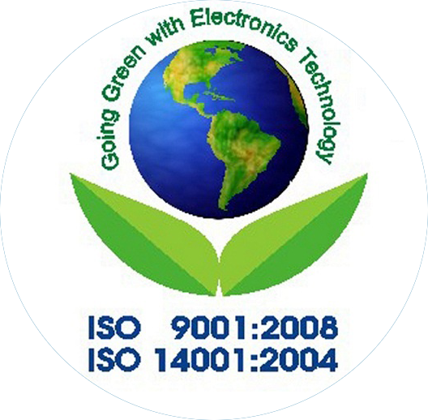

Nhân sự
Hoàng Minh Trí
Tổng giám đốc
Chủ tịch hội đồng quản trị
Với hơn 14 năm nắm giữ vai trò quản lý tại 4P Group, ông Hoàng Minh Trí có nhiều
kinh nghiệm về lĩnh vực Truyền Thông và Dịch Vụ Khách Hàng.
Trước khi công tác tại 4P Việt Nam, ông từng đảm nhiệm các vị trí quản lý tại
4P Singapore và 4P Bangalore, Ấn Độ. Ông được biết đến như một nhà quản lý có
tâm và chuyên nghiệp.

Nguyen Thi A
Giám Đốc Điều Hành
Với hơn 11 năm giữ vai trò quản lý tại 4P Vietnam, Nguyen Thi A đã thiết lập quy trình hoạt động hiệu quả từ trong ra ngoài nhờ vào kiến thức và kinh nghiệm lãnh đạo sâu rộng.
Tham vọng của bà là góp phần hỗ trợ và phát triển những thương hiệu tiềm năng trong nước tiếp cận thị trường thế giới thành công.
Nguyen Van B
Giám đốc điều hành sáng tạo
Là nữ giám đốc sáng tạo đầu tiên của 4P
Với bề dày kinh nghiệm lâu năm tại 4P Tokyo, Nguyen Van B từng gặt hái nhiều danh hiệu trong quá trình thực hiện các dự án quảng cáo cho LG, Suntory, Shiseido và đài phát thanh truyền hình Shizuoka, đồng thời đạt nhiều giải thưởng tại các sự kiện quảng cáo quốc tế.
Masako cũng là thành viên ban giám khảo tại các giải thưởng quảng cáo quốc tế như Clio, YoungGuns, AdFest, Cannes, Spikes Asia, One Show, và Art Directors Club.
Vu Thi CD
Giám đốc bộ phận dịch vụ khách hàng
Vu Thi CD có hơn 22 năm kinh nghiệm trong lĩnh vực dịch vụ khách hàng, đặc biệt, hơn 11 năm kinh nghiệm
về lĩnh vực quảng cáo và truyền thông. Vu Thi CD đã dẫn dắt đội ngũ thực hiện nhiều dự án cho các khách hàng
trong nước cũng như quốc tế trong các ngành hàng khác nhau như dược phẩm, mỹ phẩm, ngân hàng, ẩm
thực, tiêu dùng nhanh, hàng không…
Vu Thi CD tốt nghiệp Thạc sĩ về Quan hệ công chúng và Quảng cáo tại Úc. Cô cũng là thành viên Ban chủ
khảo chuyên ngành Truyền thông Doanh nghiệp của Đại học Hoa Sen.
Nguyen Tuong L
Giám đốc hoạch định chiến lược tích hợp
Thành viên hội đồng chuyên gia về kỹ thuật
số, DBA APAC
Với hơn 10 năm kinh nghiệm về lĩnh vực Tiếp thị và Truyền thông, từ phía khách hàng cũng như
agency, Luân đang lãnh đạo một đội ngũ hơn 10 chuyên viên tư vấn chiến lược giàu kiến thức chuyên môn,
chú trọng về giải pháp kinh doanh trong nhiều chuyên ngành đa dạng, từ tiêu dùng nhanh, dược mỹ
phẩm, ẩm thực, bất động sản, công nghiệp… đến B2B, games, giải trí, bán lẻ… và cả kỹ thuật số và Tiếp
thị nội dung.